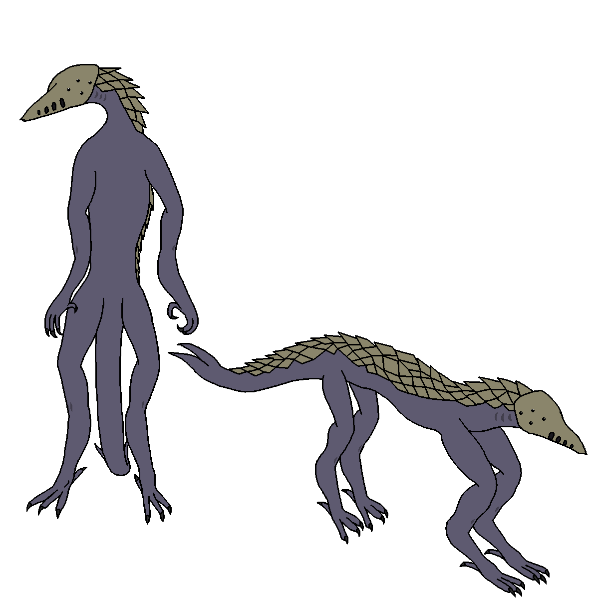

link to this page
Citwaz

Citwaz are an example of sapient xenobiota found in the Stareater Expanse. They are an intelligent species of solitary hematophagous predators which despite their advanced intelligence failed to evolve language.
Their involvement in society is difficult as they lack the neurology to handle language and their minds reportedly feel very alien even to other citwaz.
emotional palette
- citwaz curiosity and fear are close enough in function that the existing words can be reused to describe them.
- Strog has no clear equivalent in humans. It is usually triggered by encounters with things already known to the citwaz not behaving in expected ways, and produces urges to observe the offending object, most often a living creature, while not interacting with it, and not being noticed observing it. It's a highly energetic state & can be mentally exhausting to remain in for lengthy times even though it discourages taking any action, but it's not strictly a positive or negative emotion - it evolved as a sort of stalking behaviour that helped wild citwaz that had not yet developped a good enough model of the prey's mind to not commit potentially fatal mistakes during hunting in the future.
reproduction
Citwaz reproductive organs are located inside the tail, which functions like a pneumatic gun that wild citwaz use for shooting their sharpened eggs into prey found laying asleep, from which larvae will hatch and grow inside the prey.
Citwaz don't have any hard genetic difference between males and females in the way that humans do, instead relying on hormone concentrations and constant regeneration. Individuals will naturally flip to female and only transition back to male when they haven't had access to one in a while, which means is sometimes described as their species having an effective "1 to n-1" male-female ratio for any given area.